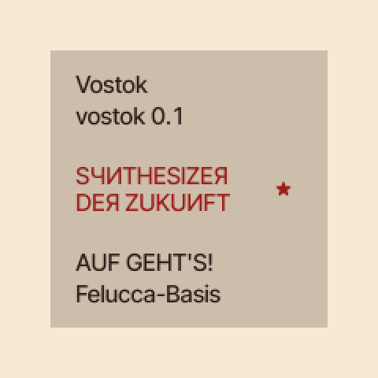

FOЯEШOЯD BЧ THE DIЯECTOЯ OF THE IИSTITUTE
Dear Young Pioneer!
You are holding the latest thing from the VEB Karl-Marx-Stadt Harmonikawerke (Karl-Marx-Stadt Harmonica Works). This is no electronic organ and no electric piano. It is a synthesizer, an instrument that could not have existed only a few years ago.
Our science has sent people into the cosmos. Now it sends music after them. The Vostok synthesizer makes sound not with strings or pipes but with mathematics and electrical engineering: current oscillates, one oscillation bends another, and out of this come sounds of a clarity never heard before. This is the work of the novel Z37 formula code. Konrad Zuse would be proud.
Read this manual carefully, practise hard and share your songs with your comrades. The future sounds the way you play it.
ЯEMEMBEЯ, PIOИEEЯ: A synthesizer rewards curiosity. Turn every knob before you ask what it does.
ШHAT IS VOSTOK?
Vostok is an operating system for two devices by M-VAVE:
| Device | Model | For whom |
|---|---|---|
| Vostok FM-1 | M-VAVE FM-1 | the Pioneer model, for your jacket pocket |
| Vostok SMK-37 | M-VAVE SMK-37 Pro, SMK-37 Elite, MKE-P37 | the House of Culture model, with 37 keys, pads and faders |
Both devices play the same world of sound. Vostok is built on Felucca, the free operating system by Hügelton Instruments, and adds a sound engine of its own in Z37 formula code: VOSTOK, made for minimal wave, coldwave, post-punk, darkwave, sovietwave and doomerwave.
STATE OF THIS EDITIOИ
| Part | State |
|---|---|
| VOSTOK engine: 8 signals, 6 macros, SUB, LEIER | done |
| 68 factory sounds: six styles and four drum kits | done |
| The crew at power-on, Machine Hall kit, fulfilling the plan, SMK-37 buttons SPUR and CHORD | done |
| Faux-Cyrillic lettering, VOSTOK colour palette, start screen | done |
| Missions, Radio Studio, lesson mode | in preparation |
| English screen texts (LANGUAGE setting) | in preparation |
This manual does not yet describe the parts "in preparation". Until then, the other functions work as in Felucca.
GETTIИG STAЯTED
TЯЧ IT ШITHOUT A DEVICE
The emulator runs in the browser (Chrome or Edge): https://g0rst.github.io/VostockFM-1/emu/. It runs the same program code as the device.
PЯOGЯAMMIИG IИSTЯUCTIOИS
- Backup. Before programming an SMK-37 for the first time, back up the device's entire memory. The port kit explains
how (
docs/02-update-and-recovery.md). Without a backup there is no safe way back. - Translate. The operating system is made with
./build.sh(seeBUILDING.mdin the repository). Each model gets its own package. - Program. Put the device into update mode and load the package with the programming tool.
- Start. After switching on, the device shows its start screen: "SYNTHESIZER DER ZUKUNFT" – and then "AUF GEHT'S!" (let's go!).
ЯEMEMBEЯ, PIOИEEЯ: Back up first, program second. A cosmonaut never launches without a ticket home.
THE IИSTITUTE'S LETTEЯIИG
The screen texts are set in faux-Cyrillic: five capital letters appear as Cyrillic letters that look alike. All the others stay as they are, so everything is easy to read.
| Latin | N | R | W | X | Y |
|---|---|---|---|---|---|
| on the screen | И | Я | Ш | Ж | Ч |
So "ARCHIV" becomes AЯCHIV and "FUNKSTILLE" becomes FUИKSTILLE. Names and licences in the credits, and the help hints, stay Latin. The screen texts are German for now; English ones are in preparation.
THE VOSTOK EИGIИE
ШHEЯE TO FIИD IT
- PRESETS button (pre-set sounds): VOSTOK is at the top of the list. KNOB 2 changes the engine.
- Hold EDIT: the first white key selects VOSTOK.
On the screen it is called VSTK and carries a star.
HOШ IT SOUИDS
VOSTOK computes in Z37 formula code: frequency modulation with two operators. A modulator bends the oscillation of a carrier. The more it does, the more overtones appear and the brighter the sound. Instead of hundreds of settings there are eight ready-made recipes, the signals, and six macros that change several things at once.
THE SIGИALS (KИOB SIGИL)
| No. | Signal | Screen | Sound | Use |
|---|---|---|---|---|
| 1 | Sputnik | SPUTN | a clean beep | leads, arpeggios |
| 2 | Vostok | VOSTK | pulse wave | the minimal-wave bass |
| 3 | Molniya | MOLNJ | saw-like | coldwave leads |
| 4 | Cosmodrome | KOSMO | hollow square | post-punk bass |
| 5 | Tundra | TUNDR | breathing pad | darkwave pads |
| 6 | Northern Lights | POLAR | FM bell | sovietwave melodies |
| 7 | Radio Message | FUNK | noise, metal | hi-hats, snares, sounds |
| 8 | Machine Hall | HALLE | falling pitch | kick, tom, click |
| 9 | Kit | KIT | the whole drum set | one track for every drum (see the crew) |
THE MACЯOS
| Knob | Name | What it does |
|---|---|---|
| STRAL | Radiation | modulation depth: from dark to dazzling. Envelope and LFO, routed to FLT, move it too: the classic FM envelope. |
| ORBIT | Orbit | the modulator's feedback: from smooth to rough and buzzing. Envelope and LFO on SHP move it too. |
| START | Launch | 0 to 63 "crisp": the sound darkens after the attack (the higher, the slower). 64 to 127 "wide": the sound swells in over up to 1.5 seconds. |
| SCHWB | Weightlessness | a second, slightly detuned carrier: the wide beating of sovietwave |
| STILL | Radio Silence | fewer bits, a lower sample rate, a darker filter: cassette and shortwave |
| SUB | Sub | a sine one octave lower, for more foundation |
| LEIER | Wow | a slow pitch wobble, like an old tape machine |
The first EDIT page puts SIGNL, STRAL, ORBIT and START on the four knobs. The second page holds SCHWB, STILL, SUB and LEIER.
ЯEMEMBEЯ, PIOИEEЯ: More radiation, more overtones!
THE CЯEШ AИD THE FIVE-ЧEAЯ PLAИ
THE CЯEШ
When you switch on, all four tracks are already manned, each with a pattern in the sequencer. Press PLAY and the crew plays.
| Track | Role | Sound | Pattern |
|---|---|---|---|
| 1 | Bass | VOSTOK-1 | OFFBEAT |
| 2 | Pad | TUNDRA | PAD |
| 3 | Lead | MOLNIJA | LEAD |
| 4 | Rhythm | MASCHINENHALLE | MOTORIK |
THE MACHIИE HALL
The ninth signal is called KIT. With it, one single track plays the whole drum set: the key decides which drum sounds.
| Note | Drum |
|---|---|
| 36 (C2) | Stomper (bass drum) |
| 37 | Rim shot |
| 38, 40 | Forge (snare) |
| 39 | Applause (clap) |
| 42, 44 | Spark (closed hi-hat) |
| 46 | Steam (open hi-hat) |
| 41, 43, 45, 47, 48, 50 | Kettle drums (toms, at their pitch) |
| 56 | Telemetry beep |
On the keys these notes are two octaves down: press OCT- twice. In the sequencer they are simply notes.
In a kit the macros work differently: STRAL makes all drums brighter or darker (the middle = as built), START is the length of the hits (32 = as built), STILL makes them rough like an old cassette.
Four kit sounds come with it: MASCHINENHALLE, MARSCHKAPELLE, SCHLURFKIT and RUNDFUNKKIT. And three new patterns under SAVE > PHRASES: MARSCH (march), MOTORIK and SCHLURF (the slow doomer shuffle).
FULFILLIИG THE PLAИ
While the music plays, the device counts how often the selected track's pattern has gone round. Every four rounds it reports: PLAN 25 %, PLAN 50 %, PLAN 75 %. After sixteen rounds it shows PLAN ERFÜLLT! (plan fulfilled!) – and the next plan begins.
THE SMK-37'S BUTTOИS
| Button | What it does |
|---|---|
| NOTE REPEAT tapped | SPUR (track): select the next track (1: BASS, 2: FLÄCHE, 3: LEAD, 4: RHYTHMUS) |
| NOTE REPEAT held | as before: knobs turned while holding it snap back when you let go |
| CHORD | the envelope pages; pressed again, the LFO pages |
All other buttons stay as they were.
ЯEMEMBEЯ, PIOИEEЯ: Whoever overfulfils the plan simply keeps playing.
THE 68 FACTOЯЧ SOUИDS
The first sixteen sounds are the founding crew. Then come eight sounds for each style and the Machine Hall's four drum kits.
| No. | Group | Sounds |
|---|---|---|
| 1–16 | Founding crew | SPUTNIK, VOSTOK-1, LAIKA, TELEMETRIE, BAIKONUR, MOLNIJA, STAHLMARSCH, TUNDRA, WEISSE NACHT, POLARSTATION, POLARLICHT, FRIEDEN, SONNENWIND, PLATTENBAU, RADIOLA, LETZTER BUS |
| 17–24 | Minimal wave | KASSETTE, BETONBASS, PIONIERLIED, SIGNALTON, MORSE, FUNKTURM, KLICKTAKT, RECHENWERK |
| 25–32 | Coldwave | EISKRISTALL, NORDLICHT, KALTFRONT, PERMAFROST, STAHLWERK, GLASHAUS, SCHNEESTURM, FROSTBASS |
| 33–40 | Post-punk | FABRIKHALLE, SAITENERSATZ, STRASSENBAHN, UNTERGRUND, TROMMLER, BETONBLOCK, NACHTSCHICHT, WALZWERK |
| 41–48 | Darkwave | KATHEDRALE, NEBELBANK, SCHATTENCHOR, TIEFSEE, NACHTWACHE, SCHWARZMEER, ORGELHALLE, MITTERNACHT |
| 49–56 | Sovietwave | SALJUT, MIR, SOJUS, KOSMONAUT, STERNENKARTE, TAIGAWALD, SCHWERELOS, WOSTOK-6 |
| 57–64 | Doomerwave | HINTERHOF, NIESELREGEN, TRAMHALTE, KUECHENRADIO, SPAETSCHICHT, TREPPENHAUS, TONBAND, LETZTE TRAM |
| 65–68 | Machine Hall | MASCHINENHALLE, MARSCHKAPELLE, SCHLURFKIT, RUNDFUNKKIT |
KNOB 4 (LIST) filters the list by bass, lead, pad, pluck, keys, drum and FX.
LISTEИIИG EЖAMPLES
Eight little pieces played by the device's real sound code: only the VOSTOK engine and its factory sounds, nothing changed but the volume. Listen closely, then play them yourself!
| Style | Listen | Sounds |
|---|---|---|
| The crew | VOSTOK-1, TUNDRA, MOLNIJA, MASCHINENHALLE | |
| Machine Hall | MARSCHKAPELLE, SCHLURFKIT | |
| Minimal wave | VOSTOK-1, SIGNALTON, KLICKTAKT, FUNKTURM | |
| Coldwave | FROSTBASS, KALTFRONT, NORDLICHT, STAHLMARSCH | |
| Post-punk | FABRIKHALLE, SAITENERSATZ, TROMMLER, FUNKTURM | |
| Darkwave | KATHEDRALE, TIEFSEE, NACHTWACHE, STAHLMARSCH | |
| Sovietwave | MIR, SALJUT, SOJUS, KLICKTAKT | |
| Doomerwave | PLATTENBAU, SPAETSCHICHT, KUECHENRADIO, STAHLMARSCH |
ЯEMEMBEЯ, PIOИEEЯ: Playing along is allowed. Copying too. That is how musicians learn.
ШHAT IT LOOKS LIKE



EЖEЯCISES
EЖEЯCISE 1: THE MIИIMAL-ШAVE BASS
- Choose the sound VOSTOK-1.
- Set STRAL to about 40 % and START to 20 %: the note becomes short and dry.
- Turn up SUB: the bass gets its foundation.
- Play an eighth-note figure on two notes. A minimal-wave song needs no more.
EЖEЯCISE 2: THE COLDШAVE MELODЧ
- Choose MOLNIJA.
- Raise ORBIT until the sound turns slightly rough.
- Add some SCHWB and play a slow melody in a minor key.
EЖEЯCISE 3: THE SOVIETШAVE BELL
- Choose POLARLICHT.
- Set LEIER to 30 % and SCHWB to 40 %.
- Play a few long notes and let the reverb ring.
ЯEMEMBEЯ, PIOИEEЯ: Fewer notes, more space. The silence between the notes is part of the music.
CAЯIИG FOЯ THE DEVICE
- The way back: with your memory backup you can return to the factory operating system at any time.
- Data: Vostok keeps its data apart. Switching from another operating system clears its data.
- Report problems: https://github.com/g0rst/VostockFM-1
Vostok is a fan project based on the Felucca operating system (GPL-3.0). The VEB Karl-Marx-Stadt Harmonikawerke are made up, and Vostok is not affiliated with M-VAVE. Program at your own risk.